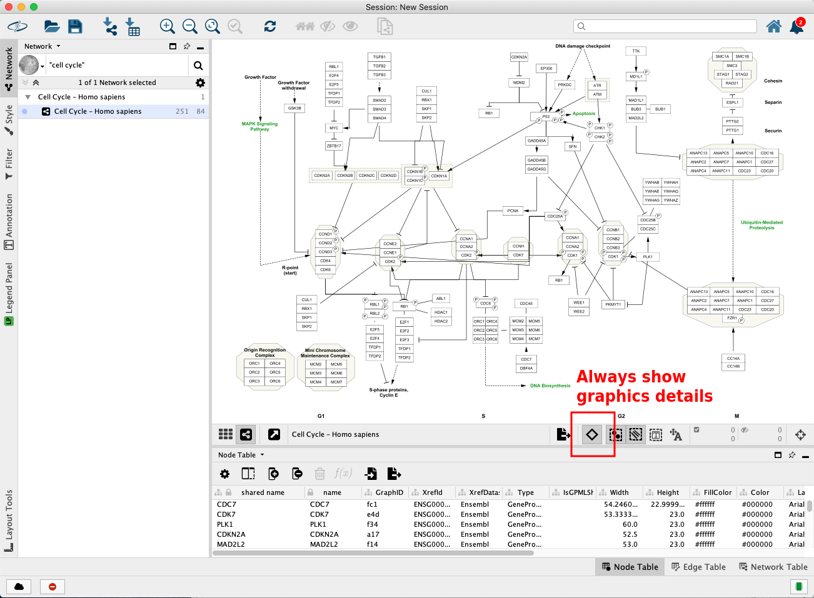
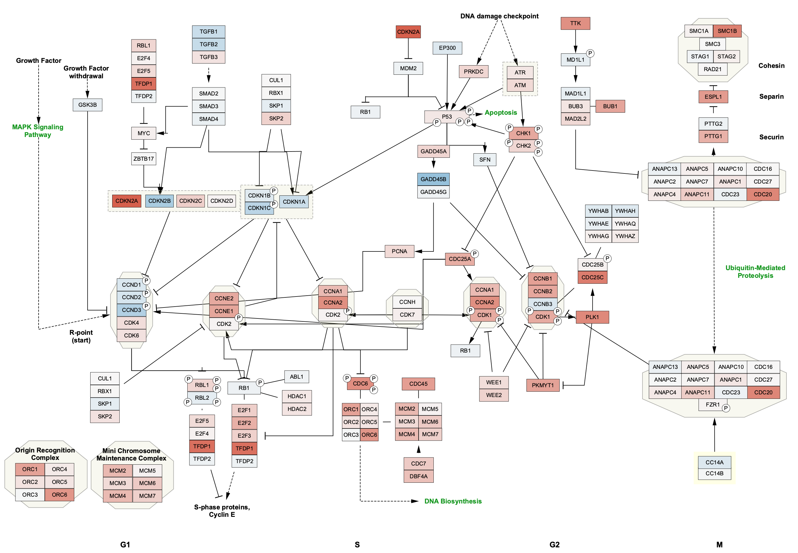

WikiPathways App
WikiPathways is a database of biological pathways maintained by and for the scientific community. Each pathway model in the database is annotated with database identfiers, which can be used for computation and data visualization. The WikiPathways App for Cytoscape is available from the App Store.
This tutorial includes a basic workflow for visualizing experimental data on pathways in Cytoscape, as well as how to import pathways as networks.

Setup
- Install and launch the latest version of Cytoscape.
- Install the WikiPathways app via
Apps → App Manager . - Download the experimental data.
Importing Pathways
- Launch Cytoscape, and in the
Network Search Tool at the top of theNetwork tab in theControl Panel , selectWikiPathways in the drop-down. Type in "cell cycle" (with quotes) and click the search icon. - A list of results for all available species will open. To see results from a select species, click the Only checkbox and select a species from the drop-down.
- Select the human
Cell Cycle and clickImport as Pathway , or simply double-click the pathway in the list.
Importing Pathways
The pathway opens in Cytoscape with the original pathway layout and the WikiPathways style:
Pathway Node Identifiers
Nodes in pathways from WikiPathways are annotated with identifiers from public databases, visible in the

Data Import
The experimental data in this case is annotated with Ensembl identifiers, so we can use the new Ensembl column to map to the data:
- Load the lung.expr.csv file under
File menu, selectImport → Table from File.... - Under
Where to Import Table Data , selectTo a Network Collection and select the relevant network collection in the second drop-down. - In the
Key Column for Network drop-down, select the new Ensembl column. - In the
Preview table, note that the Gene ID column is already selected as the key.
Data Import
The data import interface should now look like this:
- Click
OK to import. - Once import is complete, look for the newly imported data columns in the
Node Table to confirm that it worked.
Mapping Data to Visual Properties
We now have the data in Cytoscape, linked to the pathway, and ready to map to visual properties of the nodes in the network. We are going to visualize the fold change as Node Fill Color.
- In the
Style tab of theControl Panel , click theMap. box forFill Color . - In the
Column drop-down, select "log2FC". - In the
Mapping Type drop-down, selectContinous Mapping . This will create a default color gradient from blue (negative fold change) to red (positive fold change):

Importing Pathways as Networks
In addition to importing pathways with the visual style and layout unique to WikiPathways, the WikiPathways App also allows import of any pathway as a simple network.
- Again, select
WikiPathways in the drop-down of theNetwork Search Tool . Type in "PPAR signaling pathway" (with the quotes) and click the search icon. - In the list of results, select the human pathway and click
Import as Network . - We can now repeat the data import and style selection to create a visualization like in the previous pathway:

Downstream Analysis Options
Whether you import pathways as networks or as pathways, there are many different downstream analysis options available in Cytoscape:
- Extending pathways with regulatory information using CyTargetLinker
- Merging networks
Exporting Networks
Cytoscape provides a number of ways to export results and visualizations:
- As an image:
File → Export → Network to Image... - To a public repository:
File → Export → Network to NDEx , orFile → Export → Collection to NDEx - As a Cytoscape JSON file:
File → Export → Network to File and select Cytoscape.js JSON as the format.